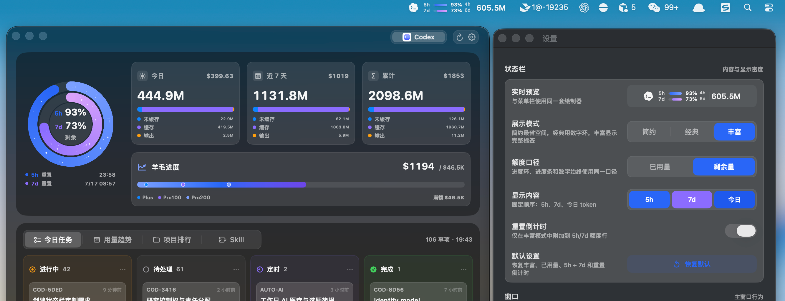
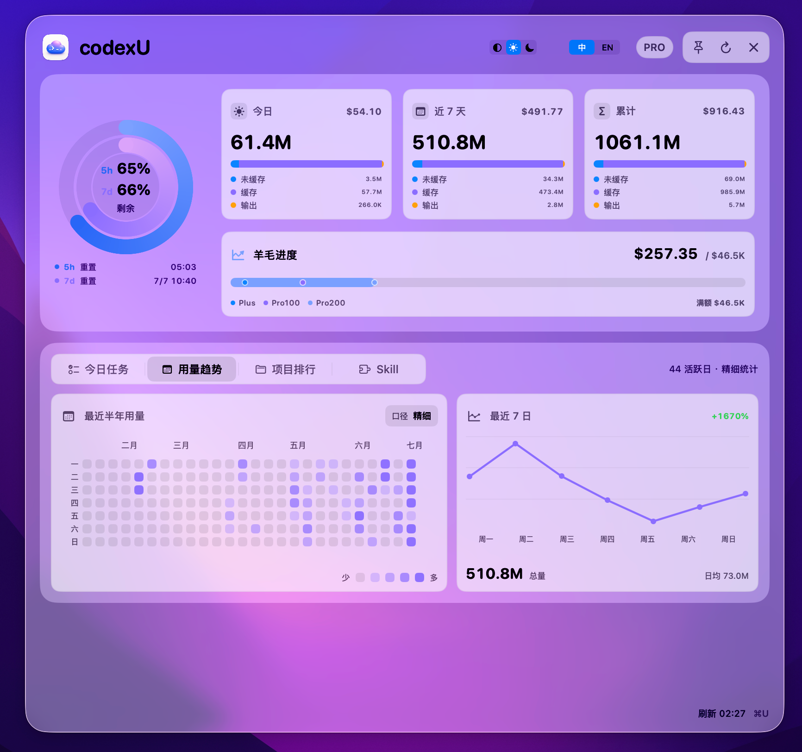

额度
双环，一眼判断。
5 小时与 7 天窗口始终保持同一语义。剩余多少、何时重置，无需心算。
动态双环重置倒计时
高颜值的 macOS 原生用量面板，极致轻量地驻留在菜单栏。
额度、Token、价值与今日任务，抬眼就能掌控。
适用于 macOS 14 及以上 · 同时支持 Apple Silicon 与 Intel

不只是仪表盘
CodexU 把复杂状态收进一眼可读的原生界面。需要时清晰出现，其余时间安静隐于菜单栏。
额度
5 小时与 7 天窗口始终保持同一语义。剩余多少、何时重置，无需心算。
趋势
从每日热力到七日趋势，用恰到好处的图表看清节奏，不淹没在原始日志里。
工作流
进行中、待处理、定时与完成任务自动归位，让 Codex 的工作进度回到视野中心。


CodexU 核心设计 · 羊毛进度
额度百分比只告诉你还剩多少，羊毛进度更进一步：按模型价格估算 API 等效价值， 让每个月的使用投入有一把直观的尺子。
不是官方账单，也不是返现金额；它是一把诚实、直观的本地价值尺子。
安静地强大
自由切换 Runtime，不改变你的判断习惯。
直接读取本机 Codex 与 Claude Code 记录，不上传 usage、线程、路径或日志。
系统字体、原生窗口、深浅模式与快捷键，一切都恰如其分。
开源 · 免费 · 本地优先
下载 CodexU，把清晰的掌控感放进菜单栏。
关注 AI 工具、Codex 实践与独立产品构建。
交流使用经验、反馈问题，也欢迎参与开源共建。